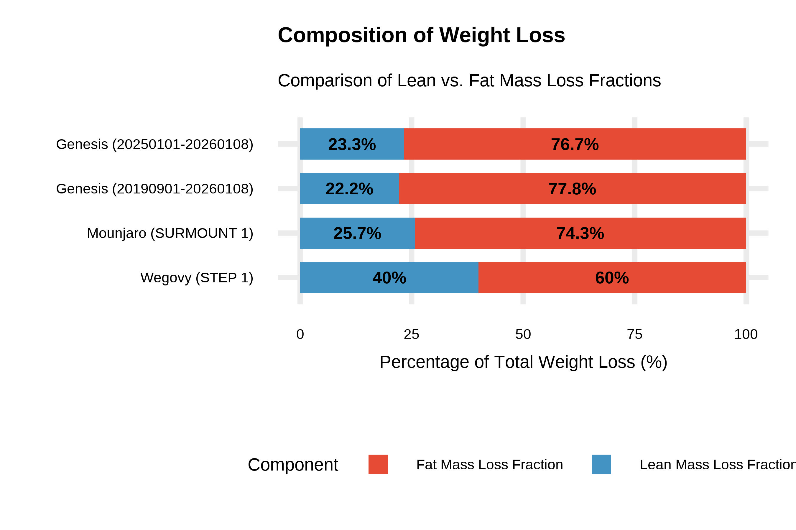

減重療效比較（GLP-1）
說明
使用資料：
- 初日診所 （2025/01/01 - 2026/01/08）
- 初日診所 （2019/09/01 - 2026/01/08）
- 各paper
初日診所資料納入條件：
- 有參加3次線上團班且3次8週療程間隔時間不超過60天
- 具有完整的W0，W8，W16及W24的體重
- 過重或肥胖的人群（BMI ≧ 24）
初日診所和各paper的介入方式整理
| Citation | Source | Drug Type | Intervention | Population | N |
|---|---|---|---|---|---|
| Genesis (20250101-20260108) | Combined | Multimodal (flexible low carb diet) | Overweight/Obese | 82 | |
| Genesis (20190901-20260108) | Combined | Multimodal (flexible low carb diet) | Overweight/Obese | 261 | |
| SCALE, JAMA Network | Saxenda 1.8mg | Liraglutide (GLP-1) | 1.8mg, Calorie restricted (-500kcal) Fat 30% Protein 20%, Carb 50%. Physical activity 150mins/week | Overweight/Obese with T2DM | 164 |
| SCALE, JAMA Network | Saxenda 3.0mg | Liraglutide (GLP-1) | 3.0mg, Calorie restricted (-500kcal) Fat 30% Protein 20%, Carb 50%. Physical activity 150mins/week | Overweight/Obese with T2DM | 324 |
| SUSTAIN 1, Lancet | Ozempic (0.5mg) | Semaglutide (GLP-1) | T2DM | 128 | |
| SUSTAIN 1, Lancet | Ozempic (1.0mg) | Semaglutide (GLP-1) | T2DM | 130 | |
| STEP 1, The New England Journal of Medicine | Wegovy | Semaglutide (GLP-1) | Initiate dose: 0.25mg, increased every 4 week until 2.4mg. Counseling sessions every 4 week. Calorie restricteed (-500kcal) Physical activity 150mins/week | Overweight/Obese | 1306 |
| SURMOUNT 1, The New England Journal of Medicine | Mounjaro 5mg | Tirzepatide (GLP-1+GIP) | 5mg QW, Calorie restricted (-500kcal). Fat 30% Protein 20%, Carb 50% Physical activity 150mins/week. | Overweight/Obese | 630 |
| SURMOUNT 1, The New England Journal of Medicine | Mounjaro 10mg | Tirzepatide (GLP-1+GIP) | 10mg QW, Calorie restricted (-500kcal). Fat 30% Protein 20%, Carb 50% Physical activity 150mins/week. | Overweight/Obese | 636 |
| SURMOUNT 1, The New England Journal of Medicine | Mounjaro 15mg | Tirzepatide (GLP-1+GIP) | 15mg QW, Calorie restricted (-500kcal). Fat 30% Protein 20%, Carb 50% Physical activity 150mins/week. | Overweight/Obese | 630 |
| PIONEER 4, Lancet | Rybelsus | Oral Semaglutide (GLP-1) | T2DM | 285 |
減重成效比較 (%)
減重成效比較 (kg)
脂肪量流失佔比和除脂體重流失佔比 (%)
指標定義與計算
1. 脂肪量流失佔比 (Fat mass loss fraction)
含義：在減少的總體重當中，「脂肪組織」所佔的比例。
計算公式： \[\text{mean Fat mass loss fraction} = \frac{\text{mean Δ脂肪重量}}{\text{mean Δ總體重}} \times 100\%\]
2. 除脂體重流失佔比 (Lean mass loss fraction)
含義：在減少的總體重當中，「瘦肉（肌肉、器官、骨骼等）」所佔的比例。
計算公式： \[\text{mean Lean mass loss fraction} = 100 - \text{mean Fat mass loss fraction}\]
注：
- Genesis的資料有排除體重增加（weight loss≧ -0.5kg）的人再進行計算。
- 為了跟paper公平比較，因paper只能取得mean值，故此處Genesis也先取mean值再計算出Fat mass loss fraction和Lean mass loss fraction。
- Mounjaro和Wegovy的具體算法記錄在此NotebookLM。
初日診所和各paper的比較
| Citation | Company | n | Weeks | Lean Mass Loss Fraction | Fat Mass Loss Fraction |
|---|---|---|---|---|---|
| Genesis (20250101-20260108) | 82 | 24 | 23.3% | 76.7% | |
| Genesis (20190901-20260108) | 259 | 24 | 22.2% | 77.8% | |
| SURMOUNT 1, NEJM | Mounjaro | 160 | 72 | 25.7% | 74.3% |
| STEP 1, NEJM | Wegovy | 95 | 68 | 40.0% | 60.0% |
| Review | GLP-1 RA & incretin hormone agonists | 20–30% |
